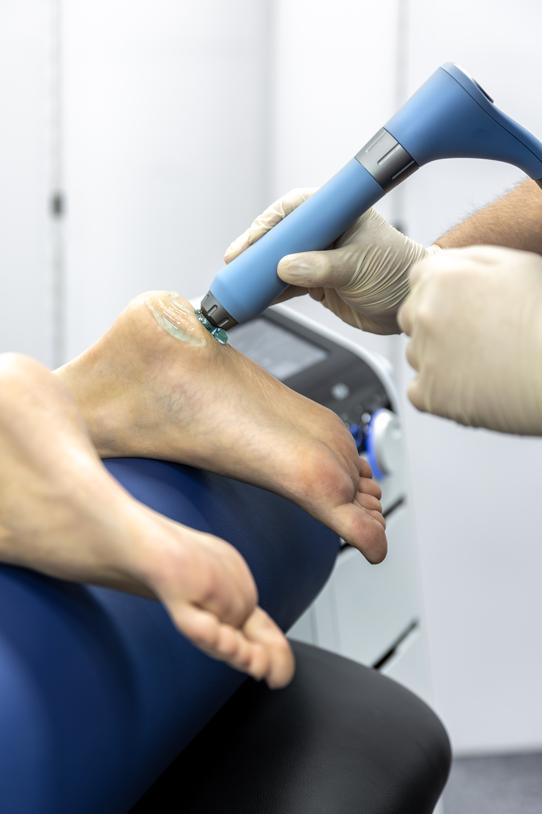
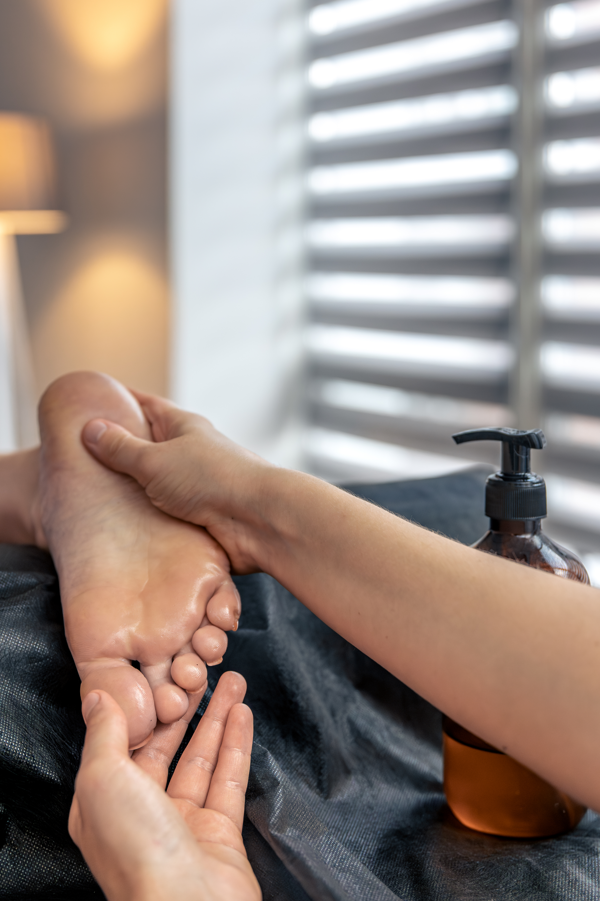

Nuestros Servicios de Podología en Bogotá
Ofrecemos atención podológica integral, especialista en el cuidado y tratamiento profesional de pies. Cada servicio está diseñado para brindarte salud, bienestar y confort.
Clínica de Podología en Bogotá
Nuestra clínica podológica en Kennedy Central ofrece tratamientos especializados para problemas comunes y complejos de los pies. Equipos de última generación y estrictos protocolos de bioseguridad para el cuidado integral de tus pies.
Ver Servicios
Spa Médico para Pies en Bogotá
Combinamos técnicas terapéuticas con tratamientos de spa de lujo para una experiencia única de relajación y cuidado. Fusionamos el bienestar con la podología profesional en un ambiente de tranquilidad absoluta.
Ver Servicios
Salón de Masaje para Pies en Bogotá
Especialistas en terapias de masaje podal que alivian tensiones, mejoran la circulación y promueven el bienestar general. Técnicas especializadas que benefician todo tu cuerpo a través del cuidado de tus pies.
Ver Servicios